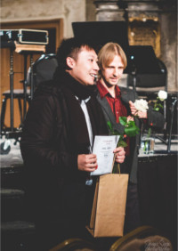

Naujienų archyvas

2020 m. liepos 20 d. 22:00
I-ojo turo rezultatai
Skelbiame II-ojo „Future Symphony“ finalininkų sąrašą! Šie dalyviai patenka į 2-ąjį konkurso turą: Skaityti daugiau
Skelbiame II-ojo „Future Symphony“ finalininkų sąrašą! Šie dalyviai patenka į 2-ąjį konkurso turą: Skaityti daugiau

2020 m. liepos 11 d. 16:00
Sauliaus Karoso fondo įsteigtas specialius prizas
Geriausias 2020 m. konkurso kompozitorius iš Lietuvos bus apdovanotas pagrindinio konkurso rėmėjo Sauliaus Karoso fondo įsteigtu specialiu prizu „už geriausią lietuvių autoriaus kūrinį“! Skaityti daugiau
Geriausias 2020 m. konkurso kompozitorius iš Lietuvos bus apdovanotas pagrindinio konkurso rėmėjo Sauliaus Karoso fondo įsteigtu specialiu prizu „už geriausią lietuvių autoriaus kūrinį“! Skaityti daugiau

2020 m. kovo 17 d. 20:00
Koronavirusas
Norime pranešti, kad, nepaisant COVID-19, konkurso visi etapai vyks pagal planą. Todėl raginame jaunuosius kompozitorius iš viso pasaulio toliau rašyti simfoninį kūrinį konkursui! Skaityti daugiau
Norime pranešti, kad, nepaisant COVID-19, konkurso visi etapai vyks pagal planą. Todėl raginame jaunuosius kompozitorius iš viso pasaulio toliau rašyti simfoninį kūrinį konkursui! Skaityti daugiau

2020 m. vasario 5 d. 17:00
Skelbiama registracijos pradžia ir galutinė instrumentuotė!
Mes džiaugiamės galėdami paskelbti registracijos pradžią į „Future Symphony“ konkursą! Į jį gali registruotis kompozitoriai iš viso pasaulio iki 2020 m. birželio 5 d. Skaityti daugiau
Mes džiaugiamės galėdami paskelbti registracijos pradžią į „Future Symphony“ konkursą! Į jį gali registruotis kompozitoriai iš viso pasaulio iki 2020 m. birželio 5 d. Skaityti daugiau
2020 m. sausio 18 d. 15:00
Registracijos į „Future Symphony“ konkursą pradžia
Mes džiaugiamės galėdami paskelbti registraciją į II tarptautinį kompozicijų simfoniniam orkestrui konkursą "Future Symphony". Skaityti daugiau
Mes džiaugiamės galėdami paskelbti registraciją į II tarptautinį kompozicijų simfoniniam orkestrui konkursą "Future Symphony". Skaityti daugiau

2018 m. spalio 8 d. 20:00
I-ojo konkurso finalinio turo rezultatai
Džiaugsmingai pranešame I-ojo tarptautinio kompozicijų simfoniniam orkestrui konkurso rezultatus! Skaityti daugiau
Džiaugsmingai pranešame I-ojo tarptautinio kompozicijų simfoniniam orkestrui konkurso rezultatus! Skaityti daugiau